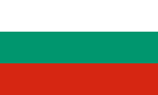
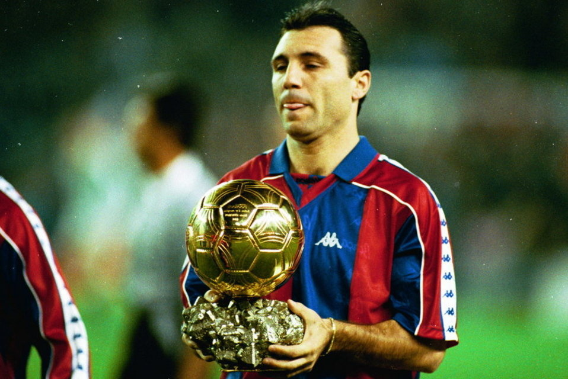
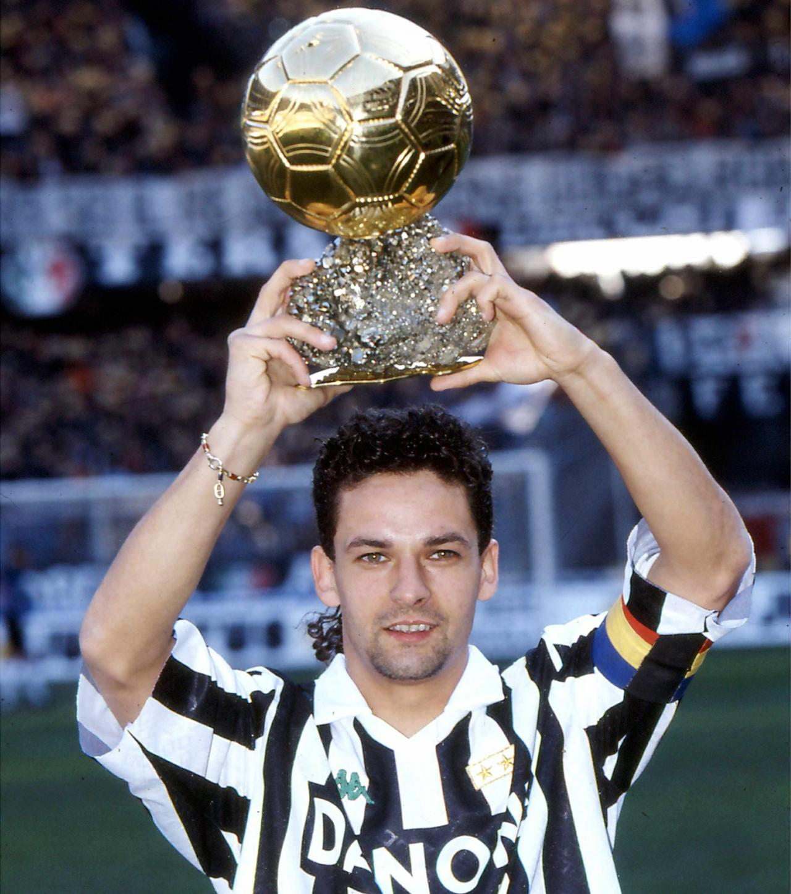
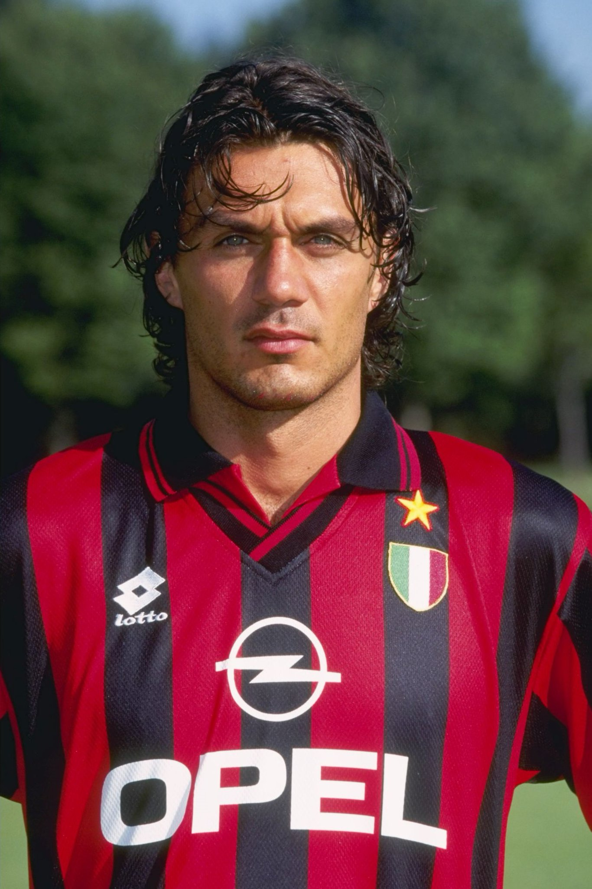

 Hristo STOICHKOV - 1994

- Domination totale de la trente-neuvième édition du Ballon d'Or
Aussi réputé pour son talent que pour son mauvais caractère,
Hristo Stoichkov
est l'un des meilleurs joueurs de football du monde dans les années 1990.
Nationalité : Bulgare
Né le : 8 février 1966, à Plovdiv (BUL)
Taille : 1,78
Poids : 72 kg
Poste : attaquant
Clubs : Maritsa Plovdiv (1976-1981), Yuri Gargarine Plovdiv (1981-1982), Hebros Harmanli (1982-1985), CSKA Sofia (1985-1990), FC Barcelone (1990-1995), Parme (1995-1996), FC Barcelone (1996-mars 1998), CSKA Sofia (mars-avril 1998), Al-Nassr (avril 1998), CSKA Sofia (avril-juillet 1998), Kashima Reysol (1998-1999), Chicago Fire (mars 2000-décembre 2002) et Washington DC United (janvier-décembre 2003)
Palmarès : Supercoupe d'Europe 1992 et 1997 ; Ligue des champions 1992 ; Coupe des Coupes 1997 ; Coupe des Coupes d'Asie 1998 ; Championnat de Bulgarie 1987, 1989 et 1990 ; Championnat d'Espagne 1991, 1992, 1993, 1994 et 1998 ; Coupe de Bulgarie 1987, 1988 et 1989 ; Coupe d'Espagne 1997 ; Supercoupe de Bulgarie 1989 ; Supercoupe d'Espagne 1991, 1992, 1994 et 1996 ; meilleur buteur du Mondial 1994 (6 buts) ; Soulier d'Or européen 1990 (38) ; meilleur buteur du Championnat de Bulgarie 1989 (23) et 1990 (38)
Bilan en club : 560 matchs, 267 buts
Bilan en équipe de Bulgarie : 83 sélections A, 37 buts (1986-1999).
Bilan en phase finale de Coupe du monde : 2 participations, 10 matches, 6 buts (1994-1998)
Palmarès Ballon d'Or : vainqueur en 1994 (2e en 1992)
Classement du Ballon d’Or France Football 1994 :
Hristo Stoitchkov (Bulgarie / FC Barcelone),
210 pts.

Roberto Baggio (Italie / Juventus Turin),
136 pts.

Paolo Maldini (Italie / Milan AC),
109 pts.
Retour à l'accueil